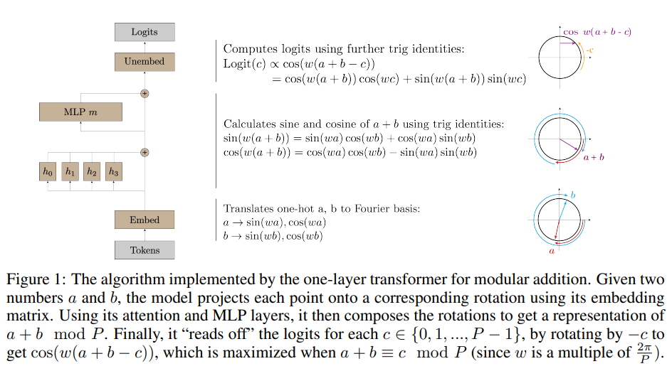
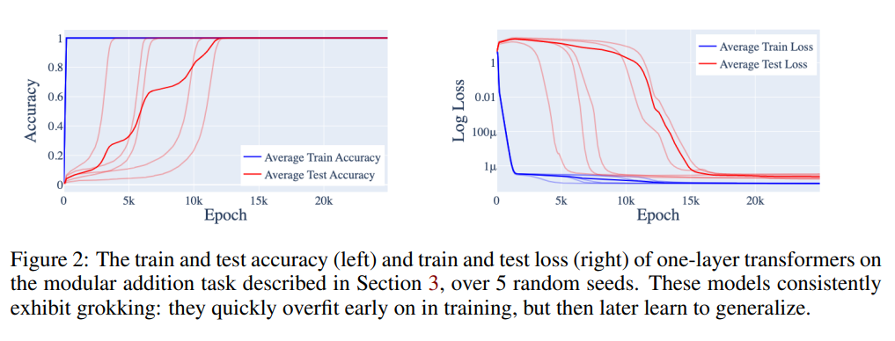
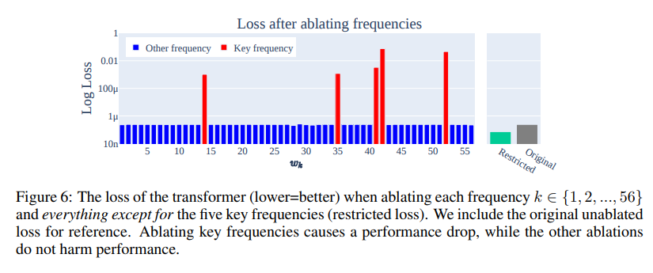
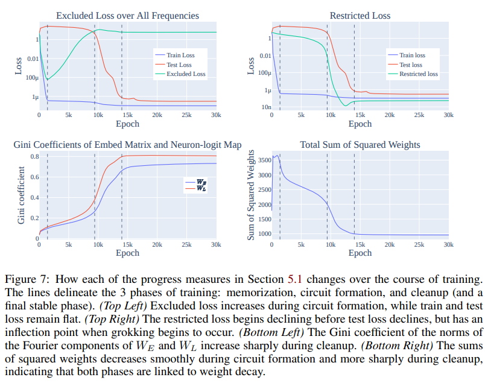
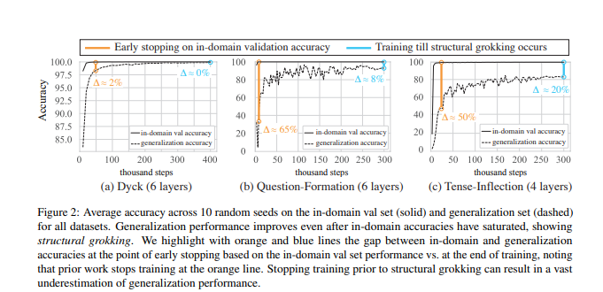
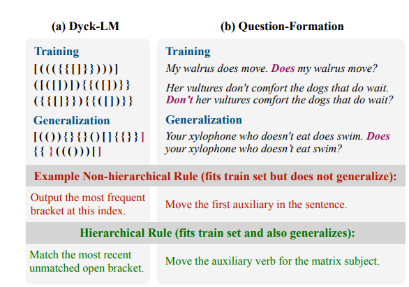
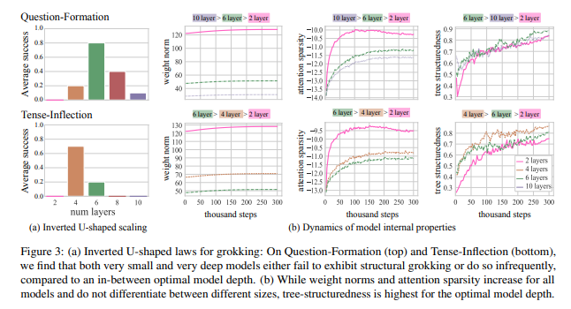

Grokking
Introduction
Grokking is a fascinating phenomenon where a model, after a period of apparent stagnation, suddenly experiences a rapid and significant improvement in performance. This abrupt transition is like epiphany moment, where the model gains a deep understanding of its task, similar to a human's moment of clarity after grappling with a complex concept. The term "grok" originates from Robert Heinlein's science fiction, meaning to understand something fully and deeply. Grokking challenges conventional expectations of gradual learning, suggesting an alternative dynamic where models might initially show little progress before suddenly achieving generalization.
The three papers that will be explored in this page, the first beeing Nanda et al 2023, Progress measures for grokking via mechanistic interpretability which shows grokking phenomenon on small transformers trained on modular addition tasks. The second paper Murty et al 2023, is about Grokking of Hierarchical Structure in Vanilla Transformers which explores hierarchically generalization. The third Y. Hu et all 2024 Delays, Detours, and Forks in the Road: Latent State Models of Training Dynamics, explores how randomness in data order and initialization impacts model training dynamics and outcomes.
Authors
Grokking mech-intrep
Neel Nanda runs the Google DeepMind mechanistic interpretability team.
Lawrence Chan is a PhD at UC Berkeley advised by Anca Dragan and Stuart Russell
Tom Lieberum is a Research Engineer at DeepMind.
Jacob Steinhardt Assistant Professor at Department of Statistics, UC Berkeley
Emergent behaviours
Emergent behaviors in machine learning models often arise unexpectedly when models are scaled up, leading to new capabilities such as in-context learning and chain-of-thought prompting. However, these behaviors also present risks, including overfitting and unintended consequences in real-world applications. For instance, YPan et al. discuss the risks associated with recommender systems, in case of YouTube since engineers couldn’t really measure the SWB(Subjective well being) they use other metrics to measure and optimize like click-through rates or watch-time. These objectives don’t make a good estimate of SWB so this led YouTube to overemphasize watch-time and harm user satisfaction and also recommended extreme political (controversial) content to users.
The emergence of these behaviors is surprising to researchers because they appear suddenly and are not easily predictable based on traditional metrics. Ganguli et al. highlight the paradox that while scaling laws predict performance improvements, the specific new capabilities that emerge are unpredictable. In fact there could still be unknow capabilities which are not triggered yet or discovered. Barak et al. further note that sudden phase changes can occur even without changes in data size, emphasizing the need for metrics that can detect these transitions before they happen. Understanding these emergent behaviors requires novel approaches beyond conventional statistical methods, as they can have significant implications for both model performance and societal impact.
Alpha zero learns a lot of human chess concepts between 10 k to 30k training steps. Reinvents opening theories between 25k to 60k.
Modular addition experiment
In this experiment they study modular addition, where a model takes inputs a, b ∈ {0, . . . , P −1} for some prime P and predicts their sum c mod P. Small transformers trained with weight decay on this task consistently exhibit grokking. They reverse engineered the weights of these transformers and find that they perform this task by mapping the inputs onto a circle and performing addition on the circle. Specifically, we show that the embedding matrix maps the inputs a, b to sines and cosines at a sparse set of key frequencies wk. The attention and MLP layers then combine these using trigonometric identities to compute the sine and cosine of wk(a + b), and the output matrices shift and combine these frequencies. 
They found four lines of evidence to differentiate the phases of grokking.
1. Network weights exhibit a periodic structure. When a Fourier transformation is applied many components are sparse and supported by few key frequencies.
2. Neuron-logit WL which is the last learnable param matrix which transforms hidden activations into logits. This can be well approximated using sinusoidal functions of key frequencies. MLP activations are projected on to these sinusoidal functions produce trigonometric identities from the neurons. Unembedding matrix WL has only a rank of 10 where each direction corresponds to either cosine or sine of only 5 key frequencies. Projecting MLP activations to WL only produces multiples of cos (wk(a + b)) and sin (wk(a + b)) where a and b are the inputs. Hence we can safely say that the sum is not computed in MLP.
3. The MLP and attention heads can be approximated well using a 2nd degree polynomials of trigonometric functions of a single frequency. Attention heads and most neurons are well approximated by 2nd degree polynomials of sins and cosines of a single frequency. The corresponding direction in WL also contains the same frequency. Hence model computations are localized across all the frequencies.
4. Ablating key frequencies reduces model performance but the other 95% has improves the performance. Ablating various components and replacing them with Fourier multiplication algorithm does not harm the performance sometimes improves it. This way the interpretability is faithful.  The paper introduces two progress metrics which improve prior to and when grokking occurs.
- Restricted loss: ablating every non key frequency.
- excluded loss: ablating key frequencies
Phase changes
The experiment shows three phases in the training. Memorization of the training data, circuit formation, where the network learns a mechanism that generalizes; and cleanup, where weight decay removes the memorization components. Surprisingly, the sudden transition to perfect test accuracy in grokking occurs during cleanup, after the generalizing mechanism is learned.
Memorization (Epochs 0k–1.4k). A decline of both excluded and train loss, with test and restricted loss both remaining high and the Gini coefficient staying relatively flat. In other words, the model memorizes the data, and the frequencies wk used by the final model are unused.
Circuit formation (Epochs 1.4k–9.4k). In this phase, excluded loss rises, sum of squared weights falls, restricted loss starts to fall, and test and train loss stay flat. This suggests that the model’s behavior on the train set transitions smoothly from the memorizing solution to the Fourier multiplication algorithm. The fall in the sum of squared weights suggests that circuit formation likely happens due to weight decay. Notably, the circuit is formed well before grokking occurs.
Cleanup (Epochs 9.4k–14k). In this phase, excluded loss plateaus, restricted loss continues to drop, test loss suddenly drops, and sum of squared weights sharply drops. As the completed Fourier multiplication circuit both solves the task well and has lower weight than the memorization circuit, weight decay encourages the network to shed the memorized solution in favor of focusing on the Fourier multiplication circuit. This is most cleanly shown in the sharp increase in the Gini coefficient for the matices WE and WL, which shows that the network is becoming sparser in the Fourier basis.
Interative grokking mech-interp
Structural Grokking
The problem addressed in this paper is understanding whether and how vanilla transformer models (standard transformers without architectural modifications) can learn and generalize hierarchical structures inherent in human language. This question arises because hierarchical structure, how smaller units in sentences form larger, nested constituents is critical for human language comprehension and generalization to new sentences.
Historically, research has suggested that transformers, due to their sequential and attention-based design, might lack inductive biases for hierarchical structure, struggling to generalize beyond the training data to structurally novel sentences. Some studies have argued that transformers only learn shallow patterns in the data without truly capturing these deeper, hierarchical relationships.
Structural Grokking
Some of the early work on hierarchical generalization(Muller et al) shows evidence that generalization does not occur or poor accuracy on certain datasets. This paper Murty et al 2023 argues that this occurs due early stopping of training. They also claim that, simply by training for longer, mean accuracy across random seeds reaches 80%, and several seeds achieve near-perfect generalization performance. 
Experimentation Structural grokking
They selected datasets that require hierarchical generalization, where training data can be explained by both hierarchical and non-hierarchical rules:
Dyck Language Modeling (Dyck-LM): The language of well-nested brackets with 20 types and max nesting depth of 10. This task involves sequences of well-nested brackets with varying types and depths, requiring the model to predict closing brackets based on nested structure.
Question Formation: Convert English sentences into questions. The task involves transforming English declarative sentences into questions by moving auxiliary verbs appropriately, which requires hierarchical manipulation.
Tense Inflection: Map from sentences and tense markers to appropriately re-inflected sentences. This task involves inflecting verbs in sentences according to tense markers, necessitating hierarchical understanding to place verb inflections accurately. Input: "She is reading a book" with a target tense of "past". Expected Output: "She was reading a book".
The models used in the experiment are transformer LMs with {2, 4, 6, 8, 10} layers. For each depth, we train models with 10 random seeds for 300k (400k for Dyck) steps. A simple greedy decoding is used from the model during testing. 